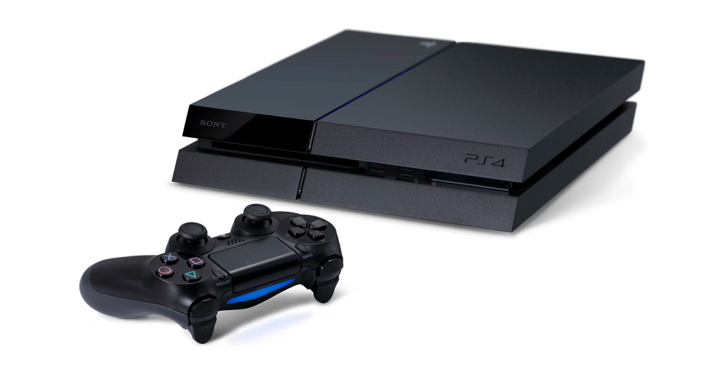
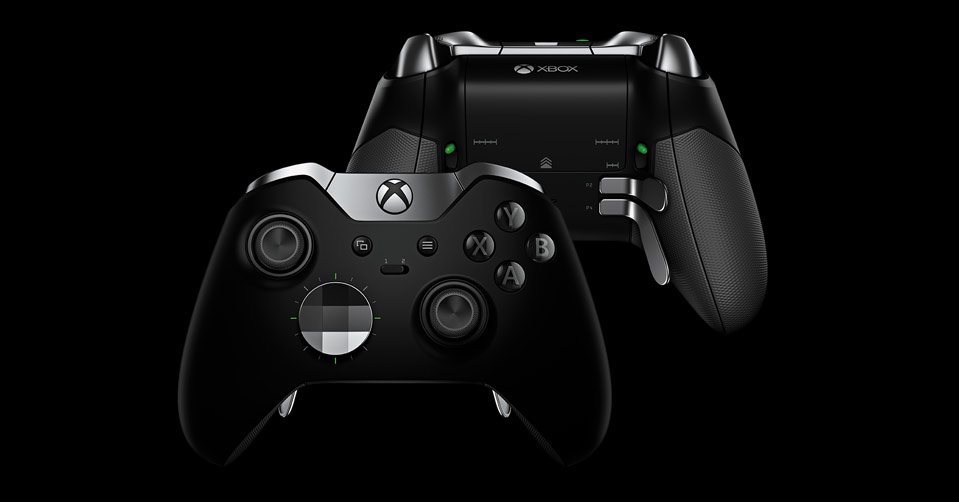
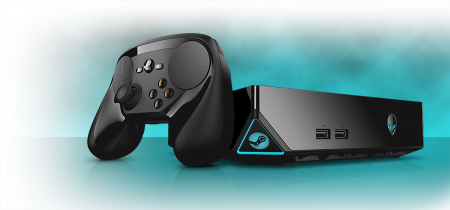
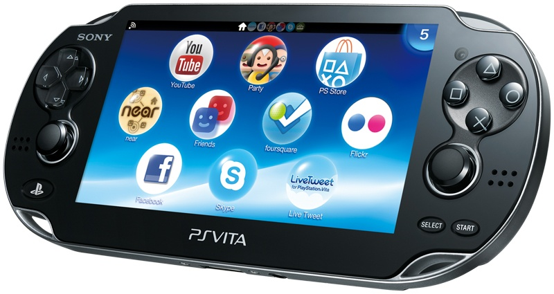
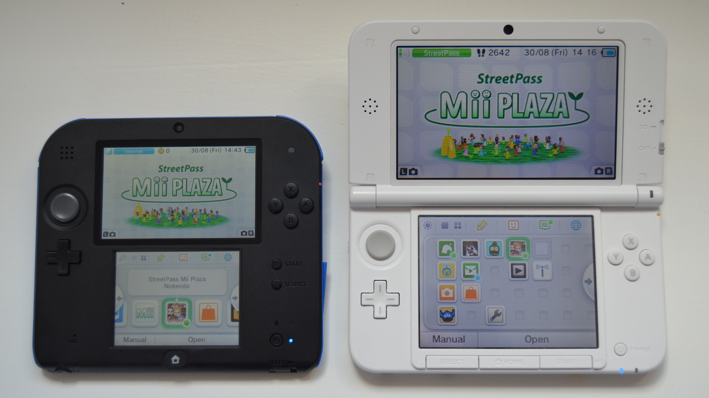

The landscape of today's home console system is very different to what it used to be in times gone by; Often disputed whether or not gaming is as good as it used to be by many fans of older consoles and classic games such as Sonic, Starfox, Metroid, etc. But we have seen many of these consoles simmer out regardless and be replaced by more powerful systems. Some of the great consoles we have seen come and go include - The Sega console family: The Sega Genesis (or Mega Drive outside the US) and Dreamcast, The Nintendo family: NES (Nintendo Entertainment System), SNES (Super NES) and Nintendo 64. Nowadays the console scene is dominated by Playstation and Xbox which we'll talk about but we'll also have a glance at Nintendo's Wii U and Steam's Steam Machine.
PS4: The 4th iteration in the Playstation family and their most innovative to date with photo sharing and streaming features available so players can interact more with each other through third party websites such as Facebook and Twitch. With this features in mind the dualshock 4 had its most radicle change since the ps1 pad gained analog sticks by replacing start and select buttons with options and share buttons. On top of that a touchpad was placed in between the two and a motion sensor was added (effectively combing the PS move into the dualshock) to the controller to allow for more interaction when playing games so there is now no need for a playstation camera and move controller seperatley to play certain games. Apart from Playstation have pretty stayed the same staple in home console systems they been the PS1 was introduced even with the main focus of playsation now being on independent game companies rather than the bigger AAA game studios. Playstation are now moving into the VR (Virtual Reality) department with their Playstation VR (codenamed Project Morpheus) so the future for them can only get better.

Xbox One: The 3rd iteration in the Xbox family following the Xbox and Xbox 360. Xbox One has taken the interactive homescreen of windows 10 and combined it with the successful aspects of the Xbox 360 along with the usual upgrades in consoles- Better graphics, Bigger Harddrives, and a wider array of games to play and ways to play them. The Xbox One comes pre-packaged with its Kinect system to allow for motion detection when playing compatible games as well as the ordinary controller. The Xbox main controller has not changed majorly in the last while except for the introduction of the high end Xbox Elite controller which adds 4 paddles to the back of the controller which have the four face buttons X, Y, A and B mapped to them to make it easier to play first-person shooter games as the player's fingers now never need to leave the two analog sticks.
They also made it so the four directional buttons on the face of the controller are now omnidirectional for players comfort. Xbox have also decided to move into the AR (Augmented Reality) department rather than VR like Oculus and Playstation with ideas being bounced around such as the Illumaroom and the HoloLens as well as the mysterious Project Fortaleza which could be the updated Illumaroom and HoloLens combo. Xbox are seemingly more interested in developing a more entertainment focused experience with their AR development rather than gaming driven experiences that Oculus and Playstation want to deliver.

Wii U: The 6th iteration in the Nintendo family but unfortunately has not capitalized on the success the Wii had. The was outselling both the ps3 and Xbox 360 but this was not repeated with the Wii U taking on the Xbox One and Ps4. Building on their motion sense technology and games centered around that tech the Wii U introduced the Wii U gamepad which works similar to the Nintendo's handheld game consoles but is compatible with the Console and allows for Players to have a similar but different experience to the other players E.G. In Mario Party while all the players are trying to finish the level the player with the gamepad can build obstacles to slow down/ speed up their progress. The Wii U has some more traditional gamepads available to players who prefer the classics and want to play Nintendo's stellar game line up that way. Nintendo have not revealed any plans about moving into VR or AR tech in fact their new Console the Nintendo NX (Might be a placeholder name) is shrouded in mystery with little bits of hearsay info going around the internet about the closed off inner workings of the consoles but as of right now we have no real information to offer about the NX and its capabilities or Nintendo's intentions with future products.
Steam Machine: Last on our list is Valve's new Steam Machine, a pre-built gaming pc in essence with its own gaming pad the Steam Controller (although it accepts any pad input) and access to Steam, Valve's store where PC owners buy and share games with their friends. This is the first iteration in Valve's home console systems technically and it's designed to compete with the other home console systems in the market as it sells for around the same price. It is tailored towards to players who don't have the funds to build their own gaming PC or who can't afford to buy a pre-built so the choose a gaming console instead because of its handiness can now play PC games with this console.
We've talked a lot here about home console systems and left out handhelds but they hold a special place in many people's hearts from the original Gameboy all the way up to the main Family members now the 2DS and the New 3DS XL we cannot deny they have played a major part in any gamer's life. So let's talk about the main handheld consoles out there now.
PS Vita: The latest member of the Playstation handheld family. The PS vita is the successor to the original PSP and builds on from the success of that console. Not much has changed from the PSP to the PS vita apart from its power and some extra buttons along with a bigger game library. Playstation seemingly don't have as much heed on this product as their main console- the PS4.
New Nintendo 3DS XL and 2DS: The 5th iteration of handheld Nintendo consoles but the two are considered within the same branch on the family tree along with the original 3DS, 3DS XL and the New 3DS. These are considered the flagship models however with the New 3DS XL being the more powerful and high end handheld and the 2DS holding back on certain features to make it cheaper for everyone to buy and enjoy the new 3DS games. The New 3DS also introduced a second analog stick on the right side and moved the start and select buttons from beside the home button on the bottom of the second screen to the side where they originally were on older consoles and moving the power button to the bottom of the console. They also moved the stylus and the game cartridge holder to here on the console rather than having the stylus at the side and the cartridge holder at the back. The console is also slightly more powerful than its brother hence the new being added to the title. The 2DS strips away the function of playing games in 3D and as a design quirk also made the console completely flat like 2D. So that's all the info we have on gaming consoles for you to read about. I hope you enjoyed the article and visit our other articles on TechHub to learn more.
Written By Declan Duffy